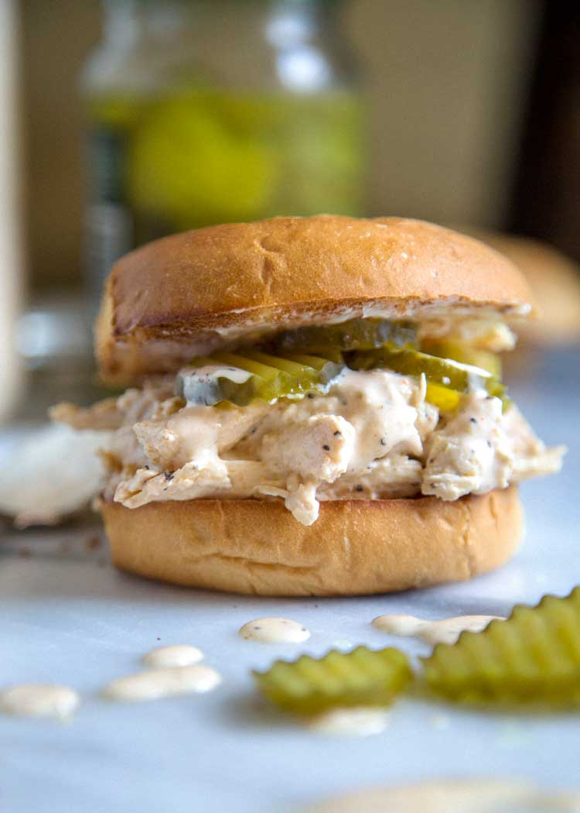

Alabama Style Sandwich

Description
Ingredients
For the sandwich
- Shredded cooked chicken–use a rotisserie chicken or make your own
- Dill pickle slices
- Hamburger buns-or Brioche buns
- Butter (optional)
For the sauce
- Mayonnaise-use real mayonnaise
- Cream style horseradish-different than prepared horseradish
- Yellow mustard–for extra heat, try spicy brown mustard
- Apple cider vinegar-white vinegar will also work
- Sugar
- Cayenne powder
- Salt and pepper
Steps
Cooking chicken breasts for shredded chicken
You can find steps online for doing this in a slow cooker or Instant Pot, but here’s a simple method you can use:
- Season– Place two chicken breasts in a large pot and add salt and pepper
- Cover with water– Fill the pot about an inch above the meat.
- Poach-Bring to a boil, then simmer for about 8-10 minutes or until cooked through. Add 4 minutes to the cooking time for each additional breast, if needed.
- Shred– Remove the chicken from the pot and shred.
- In a bowl add the shredded chicken and Alabama White Sauce. Toss to coat and set aside.
- Toast the hamburger buns until golden brown. Spread butter on (optional).
- Place 1 cup of the chicken mixture on the bottom of a bun, top with 4 dill pickle slices and place top bun half on top.